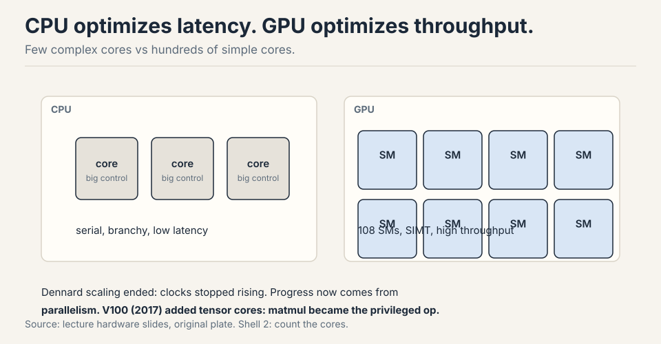
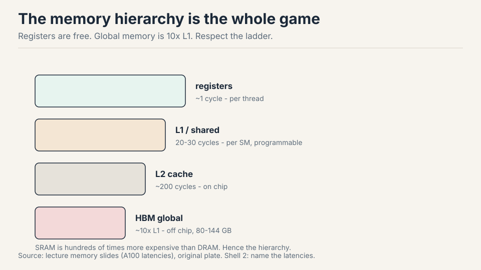
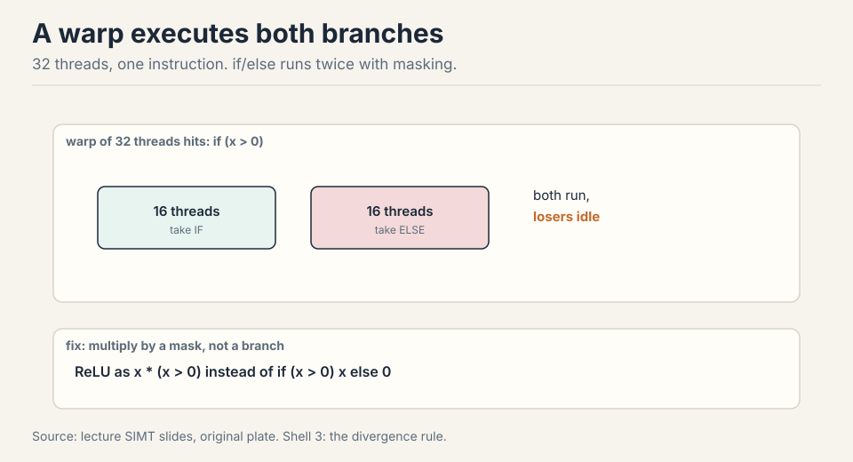
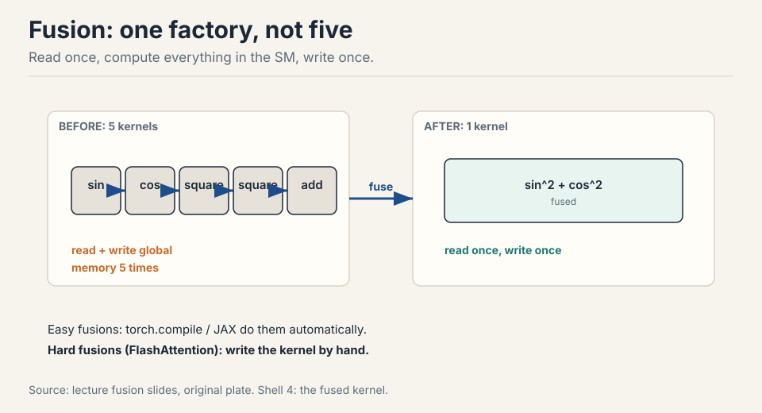
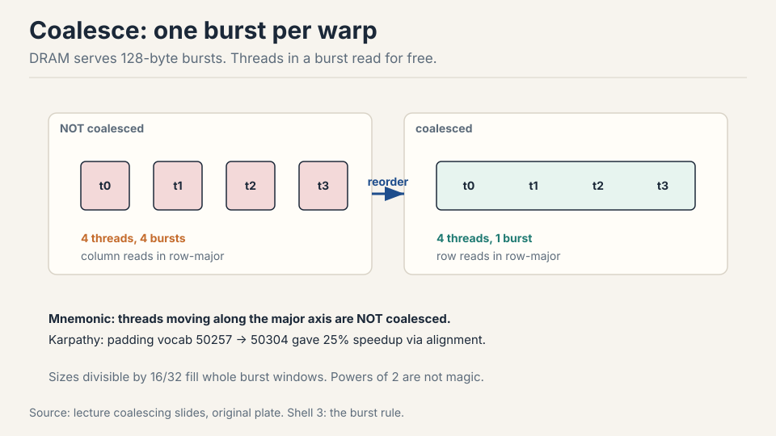
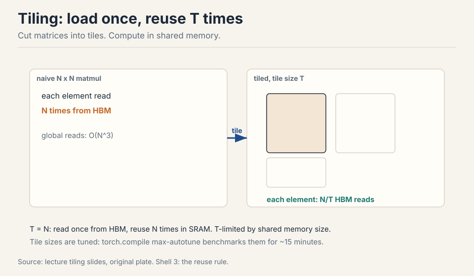
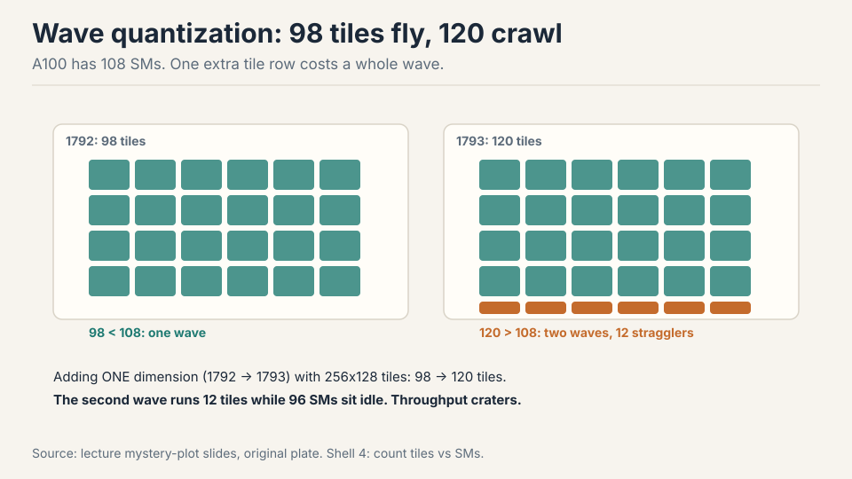
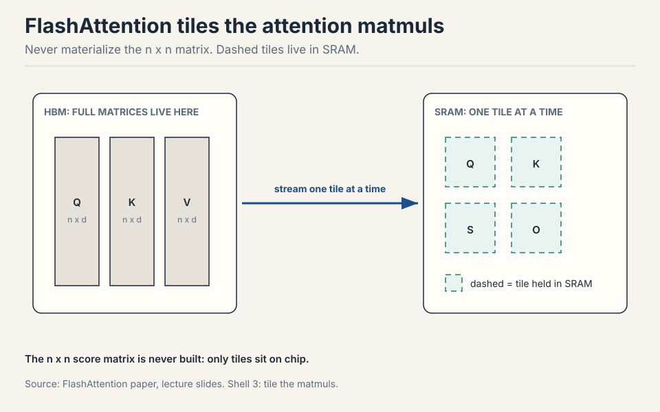

Lecture 5: How GPUs Work
Video blocked (ad-blocker or local file mode).
Watch on YouTubeVideo not loading? Watch on YouTube
Original lecture. Tatsu Hashimoto builds the GPU mental model and derives FlashAttention from six performance tricks.
How to read this lesson
This lesson has two levels. Level 1 (Core) builds the GPU mental model: cores, memory hierarchy, and the programming model. Level 2 (Deep) gives the six speed tricks and derives FlashAttention from them.
Three parts, in order: the hardware, the tricks, the victory lap 03:20 ⏱03:20. Links back: Lecture 2 for arithmetic intensity.
Level 1: Why GPUs won
In the 1990s, computers got faster by raising clock speed. That ended in the 2000s: smaller transistors stopped meaning faster clocks (Dennard scaling ended) 04:56 ⏱04:56. The field switched from faster serial execution to wider parallel execution. GPUs are that switch made silicon.
| Era | Speed came from | Status |
|---|---|---|
| 1990s | clock speed | ended: Dennard scaling stopped |
| 2000s on | wider parallel execution | still going: GPUs are that switch |
The FLOPS curve tells the story: modest gains through K20/M40, then a takeoff at P100/V100 driven by tensor cores, structured sparsity, and lower number formats 06:26 ⏱06:26.
Level 1: CPU latency vs GPU throughput
A CPU runs a few complex cores with big control units: complex branches, complex control flow, minimal time from instruction to result. Design goal: latency 07:31 ⏱07:31.
A GPU runs hundreds of simple cores executing in parallel. One task may take long to finish, but aggregate throughput across all tasks is enormous. Design goal: throughput.

Level 1: The SM is the unit
The streaming multiprocessor (SM) is the discrete compute unit of a GPU: an independent core with its own subcomponents and memory access 09:25 ⏱09:25. Inside each SM sit streaming processors running threads in parallel. An A100 carries 108 SMs, each independently programmable.
GPU : 108 SMs (A100), each an independent core SM : streaming processors running threads in parallel
Level 1: The memory hierarchy
Compute is only half the story. Modern LLM optimization is defined by memory: where data lives and how fast it moves 10:27 ⏱10:27.

Registers are fastest and most local. L1 and shared memory answer in 20-30 cycles. L2 is slower. Global HBM is ~10x L1 latency. Physically, global memory chips sit outside the compute die. L2 and L1 live on the chip, close to the SMs 11:40 ⏱11:40.
Why not build everything from fast SRAM? It costs hundreds of times more than DRAM and burns far more power 12:10 ⏱12:10. Groq tried giant SRAM (great for inference, expensive always). Everyone else lives with the hierarchy and programs against it.
Level 1: Threads, blocks, warps
Three terms carry the programming model 13:35 ⏱13:35.
thread : one worker, SIMT (same instruction, different data) block : threads on one SM, sharing its shared memory warp : 32 threads, the scheduling unit, swapped on stalls
Thread: lightweight parallel worker. All threads obey SIMT: every thread executes the same instruction on different data.
Block: a group of threads guaranteed to run on one SM, sharing that SM’s shared memory. Blocks matter for tiling later.
Warp: 32 consecutively numbered threads, the scheduling unit. The scheduler swaps whole warps quickly when one stalls.
Shared memory is programmable: you put things in and take them out. The L1 cache is automatic: it just holds recent data 12:54 ⏱12:54. Beyond shared memory, everything is slow. Grouping blocks to cut global reads is the name of the game 17:08 ⏱17:08.
A block is a programming unit: a group of threads guaranteed to land on one SM, sharing its shared memory. A warp is a hardware scheduling unit: 32 threads that always execute the same instruction together under SIMT. You organize work into blocks to control data sharing. The hardware schedules it in warps. Confusing them leads to bugs about what memory threads can share. It amortizes scheduler overhead: one scheduling decision drives 32 threads. The number is architectural, not mathematical. What matters for you is the consequence: 32 threads move in lockstep, so make their memory accesses land in the same burst.
Level 1: TPUs, the convergent cousin
TPUs are the alternative evolution of the same idea: an energy-efficient ML accelerator converges to the same shape 17:18 ⏱17:18. Same memory hierarchy (HBM + fast local memory), same matrix-multiply unit (systolic arrays underneath both), same concepts with different names.
| GPU | TPU | |
|---|---|---|
| matrix units | many small (100+ SMs) | few giant (2 cores, 8 MXUs) |
| flexibility | high | lower (64-dim minimums) |
| memory | HBM plus fast local | HBM plus fast local |
The differences: TPUs use few giant matrix units (2 cores, 8 MXUs) vs the GPU’s many small ones (100+ SMs, hundreds of tensor cores). Giant units are less flexible: a TPU tensor core refuses inputs below 64 dims, so batch sweeps stop at 64 21:46 ⏱21:46. Naming trap: a TPU “tensor core” is a processor. A GPU “tensor core” is a matrix-multiply unit 20:30 ⏱20:30.
Level 1: Tensor cores made matmul privileged
Before V100, no dedicated matmul unit existed: researchers hand-programmed shaders to multiply matrices 24:35 ⏱24:35. Tensor cores changed the game: matmul throughput exceeds other FP ops by 10x or more. Any architecture that scales with compute will contain a matmul, because nothing else converts silicon to FLOPs as efficiently.
before V100 : hand-programmed shaders for matmul V100+ : tensor cores, matmul 10x other FP ops rule : architectures that scale contain a matmul
Level 1: Compute outruns memory
Three curves diverge 25:31 ⏱25:31. Compute throughput (gray) climbs fast. Memory bandwidth (green) climbs slowly. Interconnect (blue) climbs slowest. The growing gap is why this lecture’s tricks are memory tricks: every year, utilizing the hardware takes more data-movement work. Inference hardware splits already reflect this: prefill (matmul heavy) and decode (bandwidth heavy) want different chips 28:52 ⏱28:52.
compute (gray) : climbs fast bandwidth (green) : climbs slowly interconnect (blue) : climbs slowest result : every year, more data-movement work per FLOP
Level 2: Trick 1, no if statements
SIMT means every thread in a warp executes the same instruction. An if statement runs both branches: each side executes while the other side’s threads sit idle and masked 32:57 ⏱32:57.

This is control divergence. The fix: multiply by a mask instead of
branching. ReLU as x * (x > 0) beats if (x > 0) x else 0, because
the multiply runs uniformly 34:26 ⏱34:26.
Level 2: Trick 2, low precision
Halve the bits, halve the bytes moved, halve the memory bottleneck. The subtlety: tensor cores downcast inputs, accumulate partial sums in full precision, and emit fp32 36:34 ⏱36:34. The black art is choosing which op gets which format: matmuls can be low precision, softmax and exponentials usually need fp32. Years of empirical work mapped this out.
| Format | Bits | Use |
|---|---|---|
| fp32 | 32 | softmax, exponentials, optimizer states |
| bf16 | 16 | weights, activations (range matters) |
| FP8 E4M3 | 8 | matmuls needing range |
| FP8 E5M2 | 8 | matmuls needing precision |
FP8 has no single format: E4M3 (range) vs E5M2 (precision), chosen per use 38:04 ⏱38:04. MXFP8 goes further: one scale factor per 32 elements, scales stored as E8M0 (pure powers of two) 39:45 ⏱39:45. The trap: transposing an MXFP8 matrix breaks the scaling pattern, so training keeps two copies of every quantized matrix, one for each orientation 41:16 ⏱41:16. Real savings are 20-30%, not 2x: quantization overhead eats the rest. MXFP4 (-6 to 6, per-16 scales) is next. First and last layers resist quantization: the last layer drives the loss directly 42:48 ⏱42:48.
MXFP8 attaches one scale factor to each block of 32 elements. Transpose the matrix and the blocks land in different positions: the scaling pattern no longer matches the data. Requantizing on every transpose would be prohibitive, so the framework stores both orientations pre-quantized. It is a memory-for-sanity trade that shows how exotic sub-8-bit formats get. The last layer’s outputs feed the loss directly, so quantization error there propagates undiluted into every gradient. The first layer sees raw input distributions with the widest dynamic range. Both are high-stakes, low-redundancy positions: the accuracy cost of quantizing them exceeds the throughput gain.
Level 2: Trick 3, operator fusion
Think of the GPU as a factory with a warehouse (memory) and a conveyor belt between them. Five small ops mean five round trips. Fuse them into one kernel: read once, compute everything inside the SM, write once 47:43 ⏱47:43.

Easy fusions (sin^2+cos^2) are automatic via torch.compile or JAX. Hard fusions (FlashAttention) are hand-written kernels. Same idea, different effort.
Level 2: Trick 4, recomputation
Backprop stores activations, then reads them on the backward pass. With compute cheap and memory dear, throw the activations away and recompute them during backward 50:13 ⏱50:13.
naive : 1 read + 3 writes fwd, 3 reads + 1 write bwd = 8 accesses recompute : 1 read + 1 write fwd, recompute on the fly = 5 accesses same math, 5/8 the memory traffic
Example: x through three sigmoids. Naive: 1 read + 3 writes forward, 3 reads + 1 write backward = 8 accesses. Recompute: forward 1 read + 1 write. Backward re-runs the sigmoids on the fly: 2 reads + 1 write = 5 total. Same math, 5/8 the memory traffic, a little extra compute. (This is Lecture 2’s checkpointing, seen from the kernel’s point of view.)
Level 2: Trick 5, coalesced reads
DRAM serves bursts: one access returns ~128 contiguous bytes, the rest effectively free 53:52 ⏱53:52. If all threads in a warp fall in one burst, the access is coalesced: full utilization of the burst.

For row-major matrices, threads sweeping along rows coalesce. Threads sweeping down columns touch four bursts for four values. Mnemonic: threads moving along the major axis are not coalesced 56:22 ⏱56:22.
Level 2: Trick 6, tiling
Cut matrices into tiles, load each tile into shared memory once, and do all reuse there 57:51 ⏱57:51.

Naive N x N matmul reads each element N times from HBM. With tile size T, each element is read N/T times from HBM and T times from shared memory. At T = N, one HBM read and N fast reuses. Tile sizes are tuned, not guessed: torch.compile max-autotune benchmarks candidates for minutes 63:31 ⏱63:31. Misaligned tiles break coalescing, hence padding: Karpathy’s vocab 50257 to 50304 bought 25% speedup through alignment alone 65:18 ⏱65:18.
Level 2: The mystery plot, solved
Plot matmul throughput vs matrix size and color by divisibility. Sizes divisible by 1 or 2 crawl. 8 improves. 16 and 32 are equivalent and fast 66:39 ⏱66:39. Not magic: 16 and 32 fill whole burst windows, so tiles read coalesced.
The periodic craters are wave quantization. At 1792 with 256x128 tiles: 98 tiles, fits in 108 SMs, one wave. At 1793: 120 tiles, needs two waves, and the second wave runs 12 tiles while 96 SMs idle 68:08 ⏱68:08.

Level 2: FlashAttention, the victory lap
Attention = three matmuls + one global softmax. The softmax couples all tiles, which seems to defeat tiling. The escape is the online softmax: sweep blocks, track the running max m and running sum l, rescale when a new max appears 74:07 ⏱74:07.
m_new = max(m, rowmax), then rescale the accumulated sum by the max ratio. Each tile’s softmax needs no future tiles. Keep K/Q/V tiles in SRAM, accumulate the softmax statistics in registers, multiply by V in tiles, divide once at the end. Fuse it all into one kernel. On the backward pass, recompute instead of storing the n x n matrix 76:51 ⏱76:51.

That is FlashAttention: tiling + online softmax + fusion + recomputation. Every trick in this lecture, in one kernel.
Recap: the whole lesson on one screen
CPUs minimize time per instruction. GPUs maximize instructions per second across hundreds of SMs. Dennard ended. Parallelism is the only scaling left.
Key: 108 SMs, SIMT
Registers ~1 cycle, shared 20-30, HBM ~10x L1. Outside shared memory everything is slow. SRAM costs hundreds of times more than DRAM.
Key: 20-30 cycles vs 10x
if/else executes both branches with masking. Multiply by a mask instead. Control divergence is pure idle time.
Key: x * (x > 0)
Five kernels mean five global round trips. One fused kernel reads once and writes once. Compilers do the easy ones. You write the hard ones.
Key: read once, write once
Load tiles to shared memory, reuse T times there instead of N times from HBM. Tune tile sizes by benchmark. Pad for alignment.
Key: N/T global reads
DRAM bursts serve 128 bytes. Keep each warp inside one burst. Row reads coalesce in row-major. Column reads do not.
Key: one burst per warp
98 tiles fill 108 SMs in one wave. 120 tiles need two waves and 96 SMs idle. One extra dimension can crater throughput.
Key: 1792 fine, 1793 crater
Tiled matmuls, online softmax with running max, one fused kernel, recomputed backward. Never materialize n x n. ~2x and beyond.
Key: tiling + online softmax
Official sources and further reading
Official: - Lecture 5 video. - Dao et al. (2022): FlashAttention, the tiled exact-attention paper.
Further reading: - Horace He’s GPU blogs: the clearest written versions of these mechanics. - GPU Mode community: kernels, exercises, and the speedrun culture. - Google’s TPU/GPU book: exercises matching the assignment style.
Caveats from these sources. SM counts and latencies are A100-era numbers. Newer chips differ in degree, not in kind. MXFP8/MXFP4 details track NVIDIA’s evolving formats. Check the current spec before implementing. The 20-30% MXFP8 savings are workload-dependent.
Connections to the other courses
- CS336 later lectures: Triton kernels are hand-written versions of these tricks. Parallelism lectures tile across devices the way this lecture tiles across SMs. Inference reuses fusion and recomputation.
- CS229S: the device block starts here: SM counts, HBM sizes, and the compute/bandwidth gap curves.
- CS229: the roofline here is the same diagnostic as the intensity analysis in Lecture 2.
GPU cheatsheet. CPU: latency, few complex cores. GPU: throughput, 108 SMs, SIMT. Hierarchy: registers ~1 cycle, L1/shared 20-30, L2 slower, HBM ~10x L1. SRAM 100x cost of DRAM. Thread/block/warp: block = one SM + shared memory, warp = 32 lockstep threads. TPU: convergent, few giant units, 64-dim minimum. Tensor cores (V100+): matmul 10x other ops. Curves: compute fast, bandwidth slow, interconnect slowest. Tricks: no ifs (mask instead), low precision (halve bytes. MXFP8 per-32 scales, two copies for transpose. 20-30% real), fusion (read once write once), recompute (8 to 5 accesses), coalesce (128B bursts, major axis), tile (N/T reads, tune sizes, pad). Mystery plot: divisibility 16/32 wins. Wave quantization at 1792/1793 over 108 SMs. FlashAttention: tiled matmuls + online softmax (running max) + fused kernel + recomputed backward.
Memory, memory, memory. Every trick cuts data movement: fewer bytes, fewer trips, better reuse. Compute is abundant. Movement is the bill.
Sources
- VIDEOLecture 5 video, Stanford Online YouTube
- NOTESOfficial subtitle transcript (en-US)
- PAPERDao et al., FlashAttention: Fast and Memory-Efficient Exact Attention (2022)
- SUPPLEMENTHorace He: GPU blogs and explainers
- SUPPLEMENTGPU Mode (ex CUDA Mode): community kernel resources